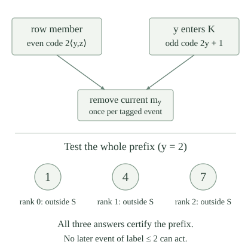

With the fixed ordinary numbering, write \(W_e=\operatorname{dom}(\varphi_e)\). The computable-domain index set and its noncomputable-domain complement are
The condition asks whether a decision program exists for the domain. It does not say that \(\varphi_e\) itself is total or that its output values are characteristic bits. Every \(W_e\) is c.e.; some have decision procedures and some do not.
For every \(e\),
If \(W_e\) is computable, its complement is c.e. by two-sided recognition. Choose one index \(d\) for that complement. The domains are disjoint and cover all inputs.
Conversely, disjointness and coverage force \(W_d=\mathbb N\setminus W_e\). Both sides are c.e., so two-sided recognition gives a decision procedure. Explicitly, dovetail the two domain recognizers on an input. Coverage makes one halt, and disjointness ensures that the answer of whichever halts is correct. This proves existence of a decider; the statement does not compute a suitable complement index from \(e\).
Using the uniform increasing finite stages, for every \(e\),
Consequently \(\mathrm{REC}\in\Sigma_3\) and \(\overline{\mathrm{REC}}\in\Pi_3\).
If \(d\) indexes the complement, the disjointness conjunct holds at every stage. Coverage supplies a stage \(t\) at which the supplied \(x\) appears on one side. Thus it supplies the required witness for every \(x,s\).
Conversely, use the formula with \(s=0\) to see that every \(x\) belongs to one of the two domains. If an \(x\) belonged to both, choose witnessing stages for its two memberships and take their maximum \(s\). Monotonicity would make both stage memberships true, contradicting the second conjunct for every possible \(t\). The domains are therefore disjoint and cover \(\mathbb N\), so applies.
The matrix is primitive recursive. Pairing \(x,s\) combines the universal block, giving an \(\exists\forall\exists\) computable-matrix description. Complement duality gives the other upper bound.
Fix a primitive-recursive row map \(g(x,y)\), and let \(K=\{y:\varphi_y(y)\downarrow\}\). Use the cumulative event construction, with row-event codes \(2\langle y,z\rangle\) and halting-event codes \(k_y=2y+1\). Define the tagged discovery schedule
The tagged event label is specified by
Parity and unpairing define this one primitive-recursive function on every natural number. Write \(S_{x,s}\) and \(S_x=\bigcup_s S_{x,s}\) for the resulting finite stages and output. In particular, each fresh code in \(E_{x,s+1}\setminus E_{x,s}\) is processed in ascending code order, inserting the current marker \(m_{\ell(c)}\) and recomputing markers before the next code. No two different event reasons are merged.
The tagged schedule is a cumulative event schedule. Its row events with label \(y\) correspond bijectively to \(W_{g(x,y)}\), and its only possible halting event with that label is \(k_y\). This event appears exactly when \(y\in K\). Every appearing event has been processed by stage \(s\) exactly when it belongs to \(E_{x,s}\).
Both event tests are primitive recursive, and each code is bounded by \(s\). Increasing \(s\) preserves the code bound and every positive stage membership, so the finite sets increase. For a row member, enlarge its witnessing stage until it also exceeds its even event code. That event then appears. Conversely, its appearance witnesses row membership. The same argument for \(y\in W_y\) proves the halting assertion.
The event-processing lemma processes each appearing event once, in the fresh difference immediately before its first stage of membership. Consequently the processed events through the construction of \(S_{x,s}\) are precisely \(E_{x,s}\). A short computation whose event code is first inspected later is still discovered; seeing it at more stages does not produce further events.
Suppose an otherwise empty finite batch has two fresh codes, one a row event and the other a halting event, both with label zero. If the current finite set is empty, which numbers are inserted? Could a record which keeps halting events only when no row event arrives at that stage recover the halting discovery?
The first event inserts \(m_0(\varnothing)=0\). Recomputing the marker gives \(m_0(\{0\})=1\), so the second inserts one. The new finite set is \(\{0,1\}\), regardless of which tagged event has the smaller numerical code. Both event reasons remain in the processed-event set.
The proposed exclusive record would discard the halting discovery in this batch. A later decoder could then falsely report nonhalting. The actual construction and decoder use the tagged halting event itself, including stages with simultaneous row discoveries.
For the tagged construction, if some row \(W_{g(x,y)}\) is infinite, then \(S_x\) is cofinite. If every row is finite, then every finite marker prefix eventually stays fixed, and \(S_x\) is coinfinite.
An infinite row gives infinitely many distinct even events of one label \(y\). The infinite-label lemma makes the corresponding marker unbounded and leaves at most \(y\) final omissions. It explicitly permits additional events at any labels, so the halting events do not invalidate it.
If all rows are finite, fix a rank bound \(n\). The finitely many rows with labels at most \(n\) contribute finitely many row events in total. At most one halting event occurs at each of these \(n+1\) labels. There are therefore only finitely many events with labels at most \(n\). The bounded-label stabilization lemma makes this entire marker prefix permanent, with all its values outside \(S_x\). Applying it at every \(n\) gives coinfinitude.
For an oracle set \(O\subseteq\mathbb N\), define the prefix certificate test
At a supplied \(x,y,s\), compute the finite stage and its first \(y+1\) markers, then ask the oracle about those finitely many numbers. This test always terminates. It has no ordinary test for whether the stage is final; its certification property below uses the specific oracle \(O=S_x\).

If \(\operatorname{Cert}^{S_x}_g(x,y,s)\) holds, no event with label at most \(y\) is processed after stage \(s\). All the first \(y+1\) markers consequently keep their stage-\(s\) values forever.
Suppose a later low-label event exists, and take the first one in the stage-and-code processing order. Every intervening event has label greater than \(y\). The exact marker-shift formula shows that all these earlier insertions leave the prefix through rank \(y\) unchanged, including intermediate states inside its finite batch.
Let \(i\le y\) be the first low event’s label. It therefore inserts precisely \(m_i(S_{x,s})\). The inserted value belongs to a later stage and hence to \(S_x\), contradicting the successful certificate’s negative oracle answer for this value. No such event exists. Every subsequent insertion has label greater than \(y\), so the same shift formula proves permanence of the whole prefix.
For fixed \(g,x\), the output-oracle halting decoder \(D_{g,x}^{O}\) is the following program on input \(y\). Search stages \(s=0,1,2,\ldots\) for the first successful \(\operatorname{Cert}^{O}_g(x,y,s)\). When one is found, return one if \(k_y\in E_{x,s}\), and return zero otherwise. If no certificate occurs, the search remains undefined.
Finite stage computation, the bounded marker-prefix loop, the oracle queries, and the final numerical event test are all effective. Thus this specifies one ordinary oracle program for each fixed \(g,x\). Searching sequentially is legitimate because each supplied-stage test terminates, even if the entire search does not.
If every row \(W_{g(x,i)}\) is finite, the specified decoder is total with oracle \(S_x\), and
In particular, \(K\le_T S_x\).
Fix \(y\). By , some stage has all the first \(y+1\) markers permanent and outside \(S_x\). That stage passes the certificate test. Sequential search therefore terminates, perhaps at an earlier successful stage \(s\). The choice of a first such stage is part of the specified program, not a supplied settling bound.
If the decoder returns one, \(k_y\in E_{x,s}\), so gives \(y\in K\). Conversely, suppose \(y\in K\). Its tagged event eventually appears and is processed. If it were absent from \(E_{x,s}\), it would have to be processed after stage \(s\). Its label is \(y\), contradicting . Thus it is already in \(E_{x,s}\), and the decoder returns one. A zero answer therefore implies \(y\notin K\). This proves the displayed bit identity and the claimed reduction.
The replay does not ask whether a halting event was the only reason for movement at its stage. Its tag remains available even when a row event acted in the same batch. Nor does the argument provide a computable settling time: the search uses membership information from the final output oracle.
Start with the empty finite set, so the current rank-one marker is one. Suppose two subsequent events have labels zero and one, in that order, and no others occur. Compute the final set and its first two complement markers. Does the original value one being outside the final set certify that the rank-one marker never moved?
The label-zero event inserts zero. The rank-one marker is then two, so the following label-one event inserts two. The final set is \(\{0,2\}\), whose first two complement markers are one and three. The original rank-one value one is still outside the final set, but its rank has changed to zero; the rank-one marker has moved from one to two to three.
Thus checking only the old value at the queried rank cannot rule out a later event at that label. The full prefix test would already fail at the initial stage, because the original rank-zero value zero belongs to the final set. This is why the decoder certifies all ranks through \(y\).
The tagged recognition program on paired input \(\langle x,z\rangle\) searches \(s=0,1,2,\ldots\) and returns zero at the first stage with \(z\in S_{x,s}\). The generic finite-stage computation applies to the tagged schedule, so this is one jointly partial-recursive procedure for the fixed \(g\).
Choose one index \(p_g^*\) for that paired-input program, before \(x,z\) vary. Define the tagged index map by the established specialization function:
The parameter theorem makes this particular map primitive recursive, and its exact domain is \(W_{q_g(x)}=S_x\). Producing the index does not run the final-set oracle decoder or decide which rows are infinite.
Let \(A\in\Sigma_3\), and choose one joint row map \(g\) from the row representation, so \(x\in A\) exactly when some \(W_{g(x,y)}\) is infinite. The specified map \(q_g\) then satisfies
In the positive case, an infinite row exists, so gives cofinitude. In the negative case, all rows are finite. The specified decoder gives \(K\le_T S_x\). The set \(S_x=W_{q_g(x)}\) is c.e., so halting completeness, including its paired-to-diagonal translation, gives \(S_x\le_m K\). The one-query simulation yields \(S_x\le_T K\). Both reductions establish the asserted degree equivalence.
A cofinite set is computable: fix its finite complement and test membership in that finite list. This is existence of a decider for each positive output, not a uniform procedure extracting the finite complement from \(x\). A set computing \(K\) cannot be computable, since a computable oracle can be eliminated and \(K\) is undecidable. Thus the two outcomes also distinguish computable from noncomputable domains.
The index set \(\mathrm{REC}\) is \(\Sigma_3\)-complete under ordinary computable many-one reductions. For every \(A\in\Sigma_3\), a primitive-recursive reduction is supplied by the tagged index map \(q_g\) for a single joint row representation of \(A\).
The upper bound is . For any \(A\in\Sigma_3\), choose its joint row map once and use \(q_g\). By , a positive input gives a computable cofinite domain, while a negative input gives a noncomputable halting-complete domain. Hence, for every \(x\),
The map \(q_g\) is primitive recursive by its actual specialization construction. This proves hardness and therefore completeness, with the stated stronger choice of reduction maps.
The index set \(\overline{\mathrm{REC}}\) is \(\Pi_3\)-complete, and every \(\Pi_3\) set has a primitive-recursive many-one reduction to it.
The upper bound is . If \(A\in\Pi_3\), its complement is \(\Sigma_3\). Apply to that complement, obtaining a primitive-recursive \(f\) with \(x\notin A\) exactly when \(f(x)\in\mathrm{REC}\). Negating both sides gives \(x\in A\) exactly when \(f(x)\in\overline{\mathrm{REC}}\). The numerical map remains unchanged, and proves the required hardness.
The constructed outputs are cofinite on positive inputs and halting-complete on negative inputs. Does this imply \(e\in\mathrm{COF}\) exactly when \(e\in\mathrm{REC}\) for every ordinary program index \(e\)?
No. A program halting exactly on even inputs has a computable domain, but its complement contains every odd number and is infinite. Such an index belongs to \(\mathrm{REC}\) and not to \(\mathrm{COF}\). Its existence and domain were established by the parity example.
The proof constructs a special range of output indices with the two stated alternatives. On that range, cofinitude and computability give the same answer because the negative alternative computes the undecidable halting set. This does not make the identity map a reduction from \(\mathrm{COF}\) to \(\mathrm{REC}\) on unrestricted input indices.